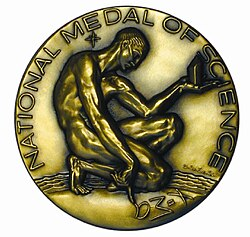
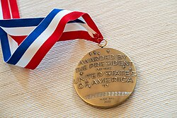
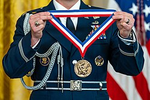

| National Medal of Science | |
|---|---|
 Obverse of the medal | |
| Awarded for | Outstanding contributions in chemistry, physics, biology, mathematics, engineering, or social and behavioral sciences. |
| Location | Washington, D.C. |
| Country | United States |
| Presented by | President of the United States |
| First award | 1963 |
| Website | new |
Ribbon of the medal | |
The National Medal of Science is an honor bestowed by the president of the United States to individuals in science and engineering who have made important contributions to the advancement of knowledge in the fields of behavioral and social sciences, biology, chemistry, engineering, mathematics and physics. The twelve member presidential Committee on the National Medal of Science is responsible for selecting award recipients and is administered by the National Science Foundation (NSF). It is the highest science award in the United States.[1][2]
The National Medal of Science was established on August 25, 1959, by an act of the Congress of the United States under Pub. L. 86–209. The medal was originally to honor scientists in the fields of the "physical, biological, mathematical, or engineering sciences". The Committee on the National Medal of Science was established on August 23, 1961, by executive order 10961 of President John F. Kennedy.[3]
On January 7, 1979, the American Association for the Advancement of Science (AAAS) passed a resolution proposing that the medal be expanded to include the social and behavioral sciences.[4] In response, Senator Ted Kennedy introduced the Science and Technology Equal Opportunities Act into the Senate on March 7, 1979, expanding the medal to include these scientific disciplines as well. President Jimmy Carter's signature enacted this change as Public Law 96-516 on December 12, 1980.
In 1992, the National Science Foundation signed a letter of agreement with the National Science and Technology Medals Foundation that made the National Science and Technology Medals Foundation the metaorganization over both the National Medal of Science and the very similar National Medal of Technology.
The first National Medal of Science was awarded on February 18, 1963, for the year 1962 by President John F. Kennedy to Theodore von Kármán for his work at the Caltech Jet Propulsion Laboratory. The citation accompanying von Kármán's award reads:
For his leadership in the science and engineering basic to aeronautics; for his effective teaching and related contributions in many fields of mechanics, for his distinguished counsel to the Armed Services, and for his promoting international cooperation in science and engineering.[5]
The first woman to receive a National Medal of Science was Barbara McClintock, who was awarded for her work on plant genetics in 1970.[6]
The awards ceremony is organized by the Office of Science and Technology Policy. It takes place at the White House and is presided by the sitting United States president.
Although Public Law 86-209 provides for 20 recipients of the medal per year, it is typical for approximately 8–15 accomplished scientists and engineers to receive this distinction each year. There have been a number of years where no National Medals of Science were awarded. Those years include: 1985, 1984, 1980, 1978, 1977, 1972 and 1971.
President Donald Trump did not confer any National Medals of Science during his presidency. The last time the medal was awarded before his presidency was on May 19, 2016, when President Barack Obama conferred the 2013 and 2014 medals.[7] On October 23, 2023, President Joe Biden presented nine Medals of Science and 12 National Medals of Technology and Innovation[8] in a ceremony in the East Room of the White House.

Each year the National Science Foundation sends out a call to the scientific community for the nomination of new candidates for the National Medal of Science. Individuals are nominated by their peers with each nomination requiring three letters of support from individuals in science and technology. Nominations are then sent to the Committee of the National Medal of Science which is a board composed of fourteen presidential appointees comprising twelve scientists, and two ex officio members—the director of the Office of Science and Technology Policy (OSTP) and the president of the National Academy of Sciences (NAS).[9]
According to the Committee, successful candidates must be U.S. citizens or permanent residents who are applying for U.S. citizenship and who have done work of significantly outstanding merit or that has had a major impact on scientific thought in their field. The Committee also values those who promote the general advancement of science and individuals who have influenced science education, although these traits are less important than groundbreaking or thought-provoking research. The nomination of a candidate is effective for three years; at the end of those three years, the candidate's peers are allowed to renominate the candidate. The Committee makes their recommendations to the President for the final awarding decision.

Since Caltech professor Theodore von Kármán received the first medal in 1962, a total of 506 medals have been awarded, with just five universities accounting for over 31% of the total. By institutional affiliation at the time of the award, Stanford University counts the most medals at 40, with Harvard University close behind at 35, followed by the University of California, Berkeley, at 30, the Massachusetts Institute of Technology at 29, and the California Institute of Technology at 27.[10]
| Top Institutions | Recipients |
|---|---|
| Stanford | 40 |
| Harvard | 35 |
| Berkeley | 30 |
| MIT | 29 |
| Caltech | 27 |
| Princeton | 18 |
| Chicago | 13 |
| UIUC | 13 |
| Rockefeller | 12 |
| Columbia | 11 |
| Wisconsin | 11 |
{kind=link}
{kind=link}
.jpg){kind=link}
{kind=link}
{kind=link}